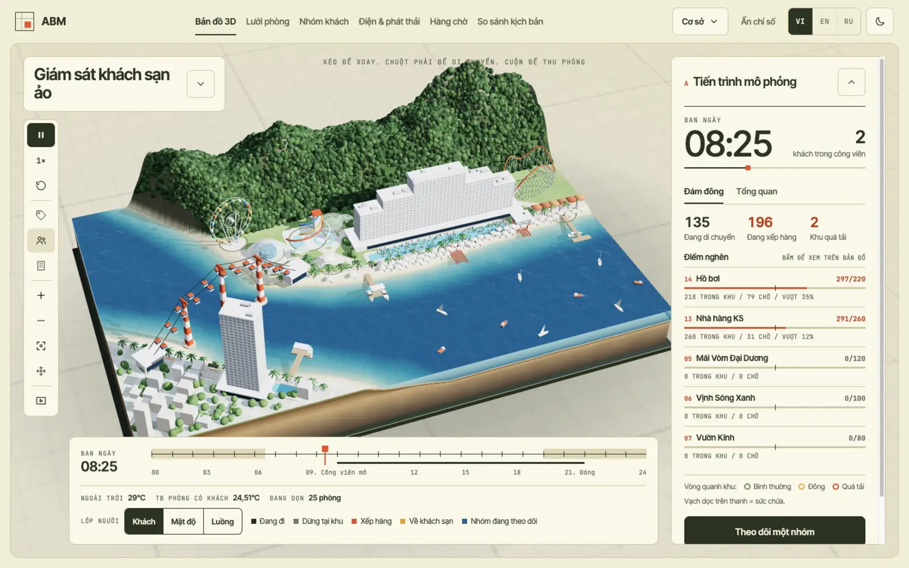
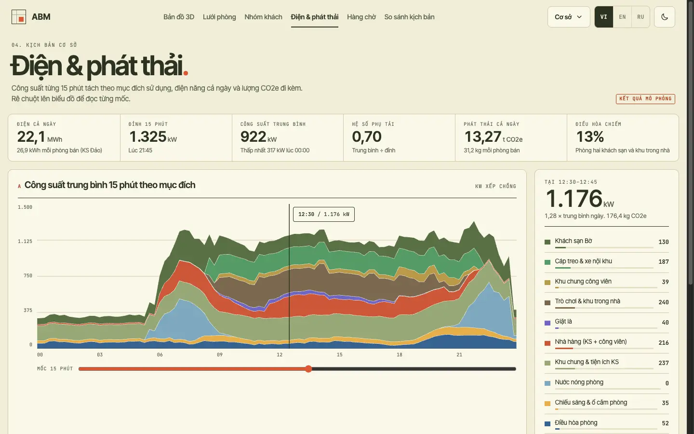
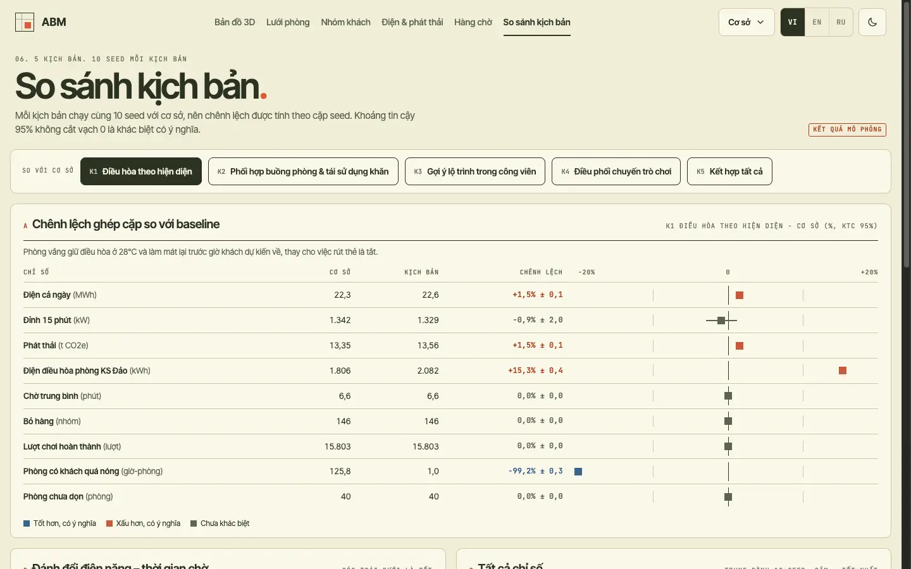
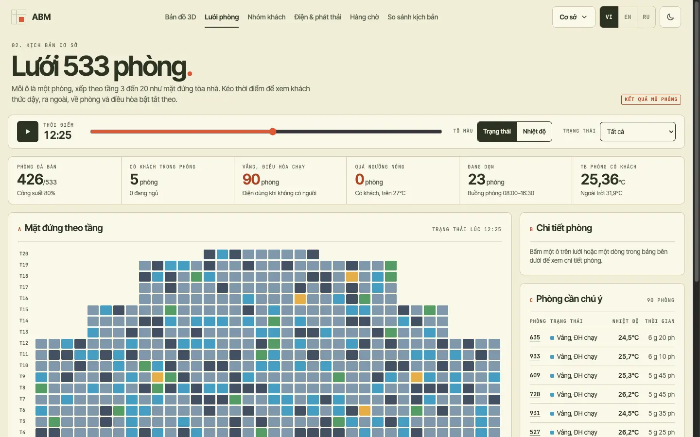

Smart air conditioning on and off
Empty rooms hold at 28 °C and pre-cool before guests return.
- Room AC energy
- Overheated room-hours
- Evening peak
We simulate guest behaviour, then measure its cost in energy, emissions and comfort.
Power, rooms, queues and laundry live in separate systems.
Switching off AC saves power but can cost comfort.
On-site experiments touch real guests.
Operating levers for energy and emissions, each weighed against comfort.
Each lever, and what the model measures alongside it
Empty rooms hold at 28 °C and pre-cool before guests return.
Clean while guests are out, air conditioning on standby, towels reused.
Steer guests toward shorter queues; they can decline.
Rides wait briefly for fuller cycles, within safe limits.
Measured savings come after calibration with real data.
Illustrative data from the prototype, not measurements
21:45
Guests return to their rooms at once and air conditioning switches back on across every floor: the hour smart air conditioning targets.
The framework is general. Hon Tre is where it is tested first: an island in Nha Trang Bay, home to Vinpearl and VinWonders, reached only by cable car or speedboat.
That closed boundary makes flows, queues and power measurable.
Next sites: recalibrate rooms, facilities and climate (RQ5).
An online prototype: 3D map, dashboard and scenario comparison, in Vietnamese, English and Russian, with fixed seeds for reproducible runs.

Load every 15 minutes, split into air conditioning, laundry, rides and lighting, with the matching CO2e.

Every policy runs on the same guests and weather; differences are paired over 10 seeds.

Rooms by floor: guests asleep, out, back in, and whether air conditioning runs in an empty room.

How do diverse guest behaviour and operating policies together shape electricity-related emissions and service quality in a hotel and theme-park system?
Waiting time, walking distance, preferences, heat and fatigue, and how this differs between families, couples, friends and solo travellers. Method: discrete choice experiment, mixed logit.
Compared with Markov chains on held-out data that was not used for calibration.
Occupancy-based air conditioning, housekeeping coordination, route suggestions and ride dispatch, and where the trade-offs lie.
People counters and existing logs feeding a digital shadow that evaluates one real policy before and after.
Different rooms, facilities and climate: which parameters carry over and which must be estimated again.
A research project of the Smart Green Transformation Center (GREEN-X), VinUniversity.
Model, 3D map and dashboard run online.
Scope, data and ethics with partners.
Calibrate and validate at the pilot site.
Carry proven policies to other hotels.
“GREEN-X is committed to delivering sustainable solutions that create real, lasting impact at scale.”